AMORTECEDOR ANTIV COXIM II PAR VIBRA-STOP
Capacidade de carga por compressão 150 kg Capacidade de carga por tração 30 kg Diâmetro 50 mm Altura 50 mm Altura da borracha + parafuso 130 mm Dureza da borracha 65 shores A Deflexão 1,8 mm / 150 kg Parafusos de ajuste 5/16", 3/8"
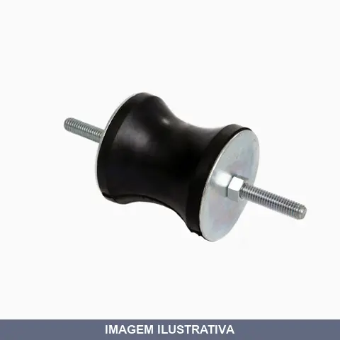
AMORTECEDOR ANTIV COXIM PAR VIBRA-STOP
Capacidade de carga por compressão 70 kg Capacidade de carga por tração 14 kg Diâmetro 30 mm Altura 30 mm Altura da borracha + parafuso 86 mm Dureza da borracha 55 shores A Deflexão 1,4 mm / 70 kg Parafusos de ajuste 1/4", 5/16"

AMORTECEDOR ANTIV MICRO II PAR VIBRA-STOP
Carga estática por peça 70 kg Carga dinâmica por peça 280 kg Diâmetro 55 mm Altura 40 mm Altura da borracha + parafuso 85 mm Dureza da borracha 55 shores A Deflexão 1,3 mm / 70 kg Parafusos de ajuste 5/16”, 3/8”, 1/2”

AMORTECEDOR ANTIV MICRO IV PAR VIBRA-STOP
Carga estática por peça 300 kg Carga dinâmica por peça 1200 kg Diâmetro 100 mm Altura 70 mm Altura da borracha + parafuso 150 mm Dureza da borracha 65 shore A Deflexão 1,8 mm / 300 kg Parafusos de ajuste 3/8", 1/2", 5/8"

AMORTECEDOR ANTIV MICRO PAR VIBRA-STOP 045MM 1/4
Carga estática por peça 50 kg Carga dinâmica por peça 200 kg Diâmetro 45 mm Altura 35 mm Altura da borracha + parafuso 70 mm Dureza da borracha 55 shores A Deflexão 1,3 mm / 50 kg Parafusos de ajuste 1/4", 5/16"

AMORTECEDOR ANTIV MICRO PAR VIBRA-STOP 045MM 5/16
Carga estática por peça 50 kg Carga dinâmica por peça 200 kg Diâmetro 45 mm Altura 35 mm Altura da borracha + parafuso 70 mm Dureza da borracha 55 shores A Deflexão 1,3 mm / 50 kg Parafusos de ajuste 1/4", 5/16"

AMORTECEDOR ANTIV MICRO PAR VIBRA-STOP 055MM 3/8
Carga estática por peça 70 kg Carga dinâmica por peça 280 kg Diâmetro 55 mm Altura 40 mm Altura da borracha + parafuso 85 mm Dureza da borracha 55 shores A Deflexão 1,3 mm / 70 kg Parafusos de ajuste 5/16”, 3/8”, 1/2”
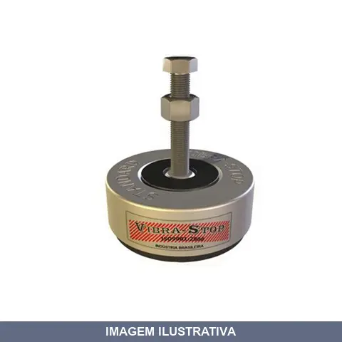
AMORTECEDOR ANTIV MICRO PAR VIBRA-STOP 062MM 5/16
Carga estática por peça 200 kg Carga dinâmica por peça 800 kg Diâmetro externo 62 mm Diâmetro da borracha 52 mm Altura regulável 25 - 30 mm Dureza da borracha 55 shores A Deflexão 2,1 mm / 200 kg Parafusos de ajuste 1/4” x 2.1/2” , 5/16” x 2.1/2” , 3/8” x 2.1/2”

AMORTECEDOR ANTIV MICRO PAR VIBRA-STOP 070MM 1/2
Carga estática por peça 100 kg Carga dinâmica por peça 400 kg Diâmetro 70 mm Altura 50 mm Altura da borracha + parafuso 100 mm Dureza da borracha 55 shores A Deflexão 1,2 mm / 100 kg Parafusos de ajuste 5/16", 3/8", 1/2"

AMORTECEDOR ANTIV MICRO PAR VIBRA-STOP 070MM 3/8
Carga estática por peça 100 kg Carga dinâmica por peça 400 kg Diâmetro 70 mm Altura 50 mm Altura da borracha + parafuso 100 mm Dureza da borracha 55 shores A Deflexão 1,2 mm / 100 kg Parafusos de ajuste 5/16", 3/8", 1/2"
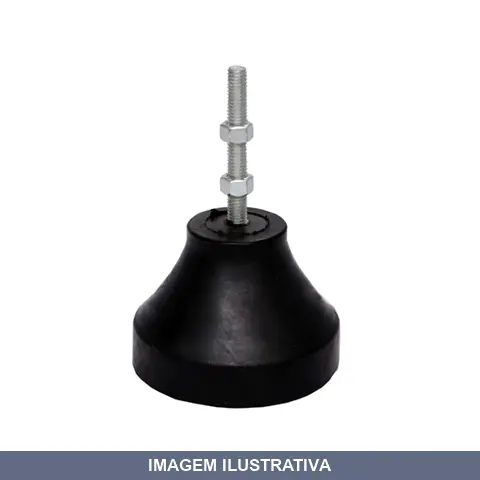
AMORTECEDOR ANTIV MICRO PAR VIBRA-STOP 070MM 5/16
Carga estática por peça 100 kg Carga dinâmica por peça 400 kg Diâmetro 70 mm Altura 50 mm Altura da borracha + parafuso 100 mm Dureza da borracha 55 shores A Deflexão 1,2 mm / 100 kg Parafusos de ajuste 5/16", 3/8", 1/2"

AMORTECEDOR ANTIV MICRO PAR VIBRA-STOP 100MM 5/8
Carga estática por peça 300 kg Carga dinâmica por peça 1200 kg Diâmetro 100 mm Altura 70 mm Altura da borracha + parafuso 150 mm Dureza da borracha 65 shore A Deflexão 1,8 mm / 300 kg Parafusos de ajuste 3/8", 1/2", 5/8"
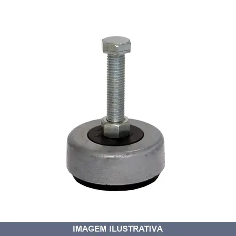
AMORTECEDOR ANTIV MINI PAR VIBRA-STOP
Carga estática por peça 500 kg Carga dinâmica por peça 2 000 kg Diâmetro externo 90 mm Diâmetro da borracha 80 mm Altura regulável 40 - 50 mm Dureza da borracha 60 shores A Deflexão 3,9 mm / 500 kg Parafusos de ajuste 3/8” x 3" , 1/2” x 3” , 5/8” x 3”
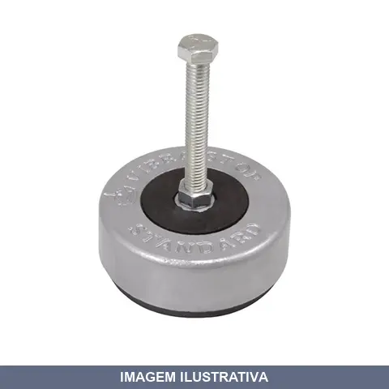
AMORTECEDOR ANTIV STANDARD PAR VIBRA-STOP
Carga estática por peça 1 500 kg Carga dinâmica por peça 6 000 kg Diâmetro externo 115 mm Diâmetro da borracha 105 mm Altura regulável 45 - 60 mm Dureza da borracha 70 shores A Deflexão 4,1 mm / 1 500 kg Parafusos de ajuste 1/2" x 4”, 5/8” x 4”, 3/4" x 4”

AMORTECEDOR CALCO DE BORRACHA GRANDE 1.500KG
Capacidade 1 500 kg Dureza 70 Shore A Deflexão 2,9 mm / 1 500 kg Medidas 150 mm x 150 mm Altura 30 mm
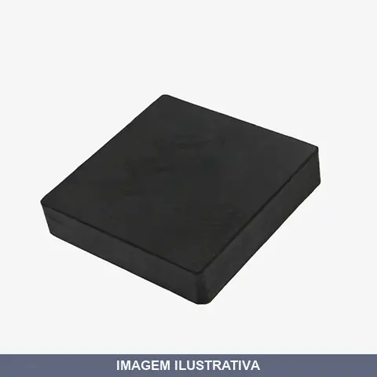
AMORTECEDOR CALCO DE BORRACHA PEQUENO 0700KG
Capacidade 700 kg Dureza 60 Shore A Deflexão 2,7 mm / 700 kg Medidas 100 mm x 100 mm Altura 25 mm
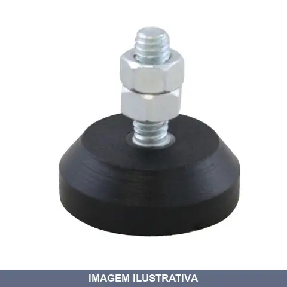
AMORTECEDOR VS PAR VIBRA-STOP
Capacidade 20 kg Diâmetro 30 mm Altura Borracha 10 mm Altura Borracha + Parafuso 30 mm Parafusos 1/4”, 5/16”
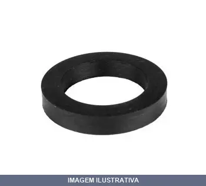
ANEL BORRACHA GUARNICAO PARA ENGATE UNIVERSAL GEU141 RF
Anel de borracha utilizado como guarnição em engates universais. Produto destinado a vedação e retenção em sistemas de acoplamento rápido. Material em borracha, resistente à pressão e desgaste. Garante vedação eficiente em conexões hidráulicas e pneumáticas.
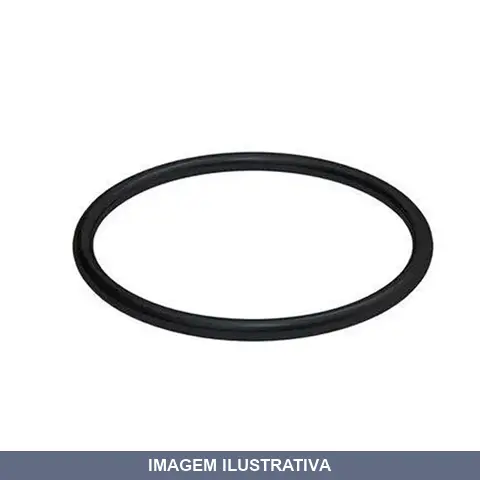
ANEL BORRACHA KRONA
Anel de borracha para esgoto 40mm. Utilizado na vedação e junção de tubos de PVC em instalações de esgoto residenciais e comerciais. Material em borracha com elasticidade natural para encaixe firme nas conexões de tubulação. Encaixe preciso que evita vazamentos.
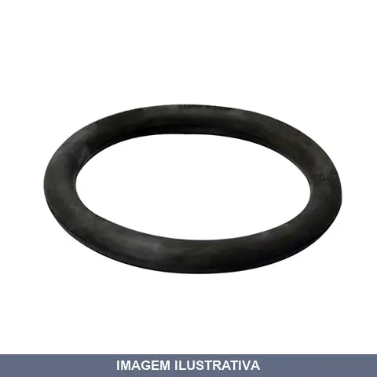
ANEL BORRACHA LUVA CORRER TIGRE
Anel de borracha para luva de correr. Componente de vedação e retenção utilizado em sistemas hidráulicos e de encanamento. Material em borracha, resistente à pressão e umidade. Facilita o encaixe e mantém a vedação em conexões de tubulação.

ANEL BORRACHA ORING M08 MDM
Indicação de Uso: Vedação e retenção de fluidos em sistemas hidráulicos, pneumáticos e mecânicos. Material e Resistência: Borracha elastômera com propriedades de vedação dinâmica e estática. Vantagem Prática: Previne vazamentos em conexões e cilindros, reduzindo perdas operacionais.

ANEL BORRACHA ORING M10 MDM
Anel de borracha tipo O-ring destinado a vedação em sistemas hidráulicos, pneumáticos e conexões. Fabricado em borracha, oferece vedação eficiente em aplicações que requerem resistência à pressão e vazamento. Aplicável em tubulações, cilindros e acoplamentos.

ANEL BORRACHA ORING M12 MDM
Anel de borracha tipo O-ring para aplicações de vedação. Utilizado em sistemas hidráulicos, pneumáticos e de fluidos em geral. Material em elastômero de borracha, proporcionando vedação eficaz em componentes e conexões que requerem estanqueidade.
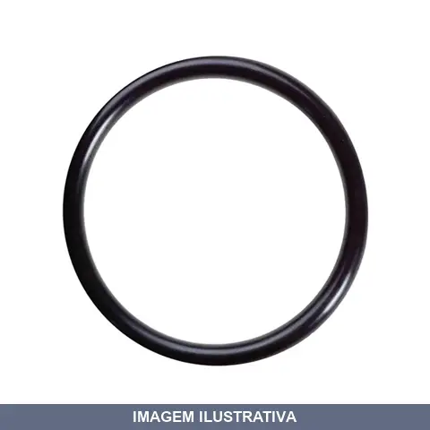
ANEL BORRACHA ORING M14 MDM
Anel de borracha tipo O-ring para vedação estática e dinâmica em sistemas hidráulicos, pneumáticos e de tubulação. Material elastômero oferece resistência a fluidos e variações de temperatura. Aplicável em conexões, cilindros e componentes que exigem vedação confiável contra vazamentos.

ANEL BORRACHA ORING M16 MDM
Anel de borracha tipo O-ring para vedação em sistemas hidráulicos, pneumáticos e aplicações gerais. Material: borracha. Vantagem Prática: reduz vazamentos em conexões e componentes sob pressão.

ANEL BORRACHA ORING M18 MDM
Indicação de Uso: Vedação e vedação estática em sistemas hidráulicos, pneumáticos e de fluidos em geral. Material e Resistência: Borracha elastômero, resistente a variações de temperatura e compressão. Vantagem Prática: Proporciona vedação eficaz em conexões e componentes mecânicos, prevenindo vazamentos.
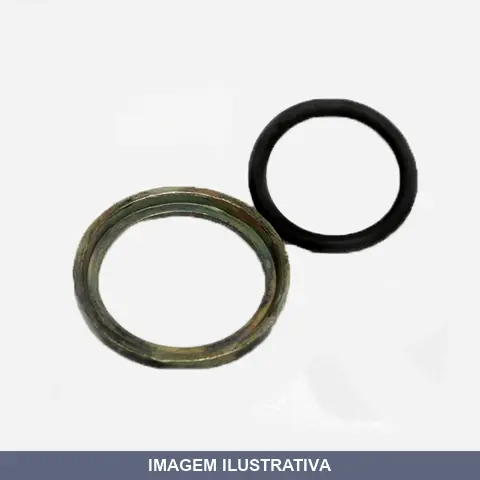
ANEL DE ENCOSTO COM ORING MDM
Anel de encosto com oring para aplicações em sistemas hidráulicos e pneumáticos. Material em metal com elastômero de vedação. Proporciona vedação eficaz e retenção de componentes em conexões e montagens industriais.
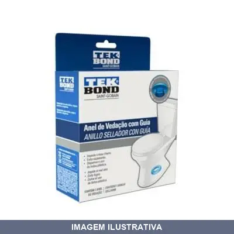
ANEL DE VEDACAO ESPUDE VASO COM GUIA TEK BOND
Indicação de Uso: Vedação e encaixe para vaso sanitário com sifão e autoclismo, protegendo contra umidade, água e odor. Material e Resistência: Borracha butílica com cargas e pigmentos inorgânicos. À prova de vazamentos, antibacteriano, antifungo, não encolhe, não deforma, não racha. Durabilidade de aproximadamente 20 anos. Vantagem Prática: Inclui guia plástica para facilitar a instalação e o posicionamento do vaso.
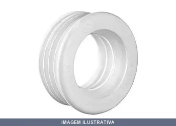
ANEL DE VEDACAO ESPUDE VASO KRONA
Indicação de Uso: Vedação entre o vaso sanitário e o tubo de saída de esgoto. / Material e Resistência: Fabricado em PVC rígido, resistente a água e variações de temperatura. / Vantagem Prática: Previne vazamentos e infiltrações na conexão do vaso sanitário.
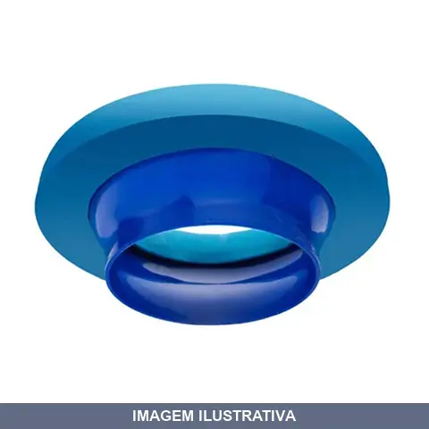
ANEL DE VEDACAO PARA VASO SANTARIO AEROFLEX
Indicação de Uso: Vedação entre vaso sanitário e tubulação de esgoto. Material e Resistência: Borrachas sintéticas, plastificantes, cargas minerais e óleos. Evita vazamentos e mau cheiro do esgoto. Vantagem Prática: Inclui guia para facilitar alinhamento e instalação. Dispensa o uso de bolsa plástica.
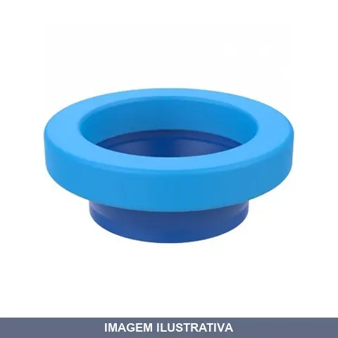
ANEL DE VEDACAO PARA VASO SANTARIO COM GUIA BLUKIT
Indicação de Uso: Vedação entre vaso sanitário e tubulação de esgoto, prevenindo vazamentos e odores. Material e Resistência: Borracha butílica e plásticos de engenharia, massa resistente que não resseca nem racha. Vantagem Prática: Guia integrado facilita instalação rápida e correta, com alinhamento preciso do vaso.
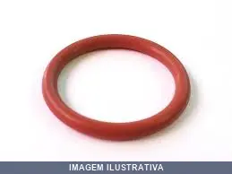
ANEL ORING EM VITON INCORUBBER
Anel de vedação O-ring fabricado em Viton, elastômero sintético com resistência química e térmica. Indicado para aplicações em sistemas hidráulicos, pneumáticos e de vedação estática ou dinâmica. Proporciona vedação confiável em conexões e componentes que requerem resistência a fluidos e variações de temperatura.
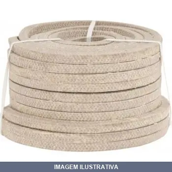
GAXETA ENSEBADA VONDER
Gaxeta de algodão em rolo ensebada Indicada para vedação de bombas e rodas d'água Suporta temperaturas de até 50°C
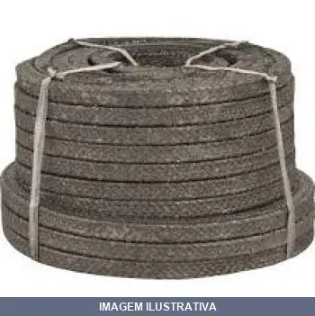
GAXETA GRAFITADA VONDER
Gaxeta de algodão em rolo grafitada Indicada para vedação de bombas e rodas d'água Suporta temperaturas de até 120°C
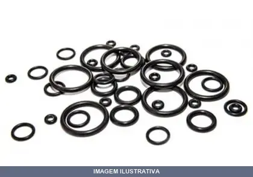
JOGO ANEL O-RING
Jogo contendo 50 peças de anéis O-ring para vedação em sistemas hidráulicos, pneumáticos e aplicações gerais. Proporciona reposição em lote para manutenção e reparos. Adequado para substituição de vedadores desgastados em válvulas, cilindros e conexões.
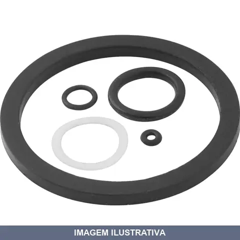
JOGO DE VEDACAO PARA PISTOLA DE PINTURA VONDER
Indicado para pistola de pintura PDV100 VONDER. Composto por 5 peças de vedação: 1 anel de vedação, 3 anéis o'ring e 1 anel de tampa. Reposição de peças que garantem a retomada perfeita de operação do equipamento.

JUNTA VEDACAO
Borracha nitrílica de alta performance para gasolina, etanol, diesel e gasolina aditivada GUARNIÇÃO 4'' - JOWEI INTERNO: 101 X EXTERNO: 125 X ESPESSURA: 12,5 APLICAÇÃO: CACHIMBO DESCARGA SELADA
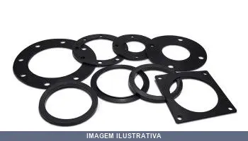
JUNTA VEDACAO 040C PARA CALCO INCORUBBER
Junta de vedação para calço, confeccionada em borracha. Aplicada em sistemas de vedação que requerem estanqueidade em calços e encaixes. Previne vazamentos e infiltrações em conexões hidráulicas e pneumáticas.

JUNTA VEDACAO B INCORUBBER
GUARNIÇÃO 4'' COM REBAIXO Borracha nitrílica de alta performance para gasolina, etanol, diesel e gasolina aditivada GUARNIÇÃO DE BORRACHA REF 002B INTERNO: 85 X EXTERNO: 107 X ESPESSURA: 8

JUNTA VEDACAO C INCORUBBER
CALÇO PARA GUARNIÇÃO ENGATE RAPIDO 4'' V E J Borracha nitrílica de alta performance para gasolina, etanol, diesel e gasolina aditivada GUARNIÇÃO DE BORRACHA REF 001 C CALÇO PARA GUARNIÇÃO REDONDA 4'' - JOWEI/VLADOS INTERNO:101 X EXTERNO:125 X ESPESSURA:2 APLICAÇÃO: ENGATE RAPIDO EXTERNA DA PORTINHOLA

JUNTA VEDACAO COM ABA INCORUBBER
JUNTA PARA TAMPA DE VISITA NOVA 450MM M Borracha nitrílica de alta performance para gasolina, etanol, diesel e gasolina aditivada JUNTA COM ABA PARA TAMPA VISITA 450MM - MGN NOVA INTERNO:452 X EXTERNO:472 X ESPESSURA:10 APLICAÇÃO TAMPA DE VISITA SOBRETAMPA
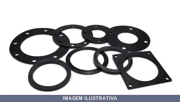
JUNTA VEDACAO COM CAVA INCORUBBER
GUARNIÇÃO ENGATE RAPIDO 4'' EXTERNA PORTINHOLA V GUARNIÇÃO DE BORRACHA REF: 001A Borracha nitrílica de alta performance para gasolina, etanol, diesel e gasolina aditivada GUARNIÇÃO DE BORRACHA REF 001 A GUARNIÇÃO REDONDA 4'' - VLADOS INTERNO:101 X EXERNO:125 X ESPESSURA:8 APLICAÇÃO: ENGATE RAPIDO EXTERNA DA PORTINHOLA

JUNTA VEDACAO E INCORUBBER
GUARNIÇÃO ENGATE RAPIDO 4'' COMPONENTES P/ ENGATES RÁPIDOS Borracha nitrílica de alta performance para gasolina, etanol, diesel e gasolina aditivada Peças de reposição para Engates Rápidos: Argola, Pino, Trava, Corrente e Anel de Vedação. GUARNIÇÃO DE BORRACHA REF 001 GUARNIÇÃO REDONDA 4''- JOWEI INTERNO:101 X EXTERNO:125 X ESPESSURA:8 APLICAÇÃO: ENGATE RAPIDO EXTERNA DA PORTINHOLA

JUNTA VEDACAO MEIA CANA INCORUBBER
JUNTA PARA TAMPA GRANDE ANTIGA ( TAMPA DE 450MM ) V Borracha nitrílica de alta performance para gasolina, etanol, diesel e gasolina aditivada JUNTA DE BORRACHA REF 0133 JUNTA MEIA CANA PARA (TAMPA 450MM) ANTIGA VLADOS INTERNO:443 X EXTERNO:470 X ESPESSURA:8,5 APLICAÇÃO TAMPA DE VISITA SOBRETAMPA

JUNTA VEDACAO PARA ADAPDOR INCORUBBER
Junta de vedação para adaptador de 4 vias. Fabricada em borracha, oferece vedação confiável em instalações hidráulicas e pneumáticas. Previne vazamentos em conexões de adaptadores.

JUNTA VEDACAO REDONDA " J INCORUBBER
GUARNIÇÃO REDONDA 4" J 97X126X5,5 Borracha nitrílica de alta performance para gasolina, etanol, diesel e gasolina aditivada GUARNIÇÃO DE BORRACHA REF 028 GUARNIÇÃO REDONDA 4''- JOWEI INTERNO:97 X EXTERNO:126 X ESPESSURA:5,5 APLICAÇÃO: ENGATE RAPIDO EXTERNA DA PORTINHOLA
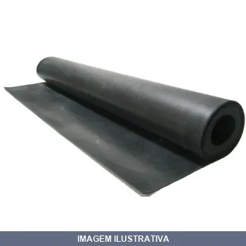
LENCOL BORRACHA NATURAL COM TELA ORION
Lençol de borracha natural com tela integrada. Material obtido do látex de seringueiras, oferecendo excelentes propriedades mecânicas e alta resistência. Disponível em durezas entre 40 e 70 Shore A. Indicado para aplicações que demandem flexibilidade, resistência e durabilidade em ambientes diversos.
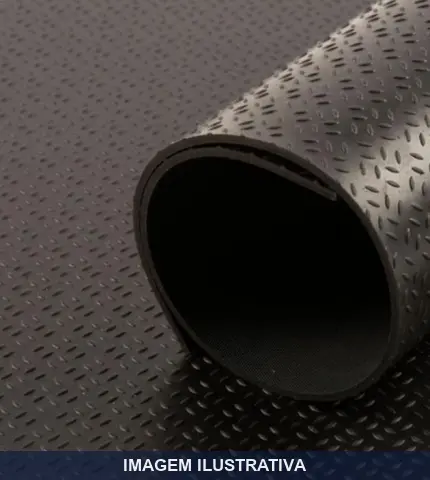
LENCOL BORRACHA PISO GRAO DE ARROZ ORION
Indicação de Uso: Ideal para áreas internas ou externas com constante fluxo de pessoas, como academias, escolas, hotéis, metrôs, plataformas, navios, rampas, escadas e ônibus. Adequado para indústrias, oficinas e fábricas. Material e Resistência: Fabricado com polímero de borracha natural. Oferece resistência a abrasão, impactos, cortes e pressão. Suporta temperatura de -40°C a 70°C. Superfície antiderrapante com textura grão de arroz. Vantagem Prática: Proporciona amortecimento de

LENCOL BORRACHA PISO MOEDA CHANFRADA ORION
PISO MOEDA CHANFRADA MASSA UNICA 1000 X 3,00 MM NR1087
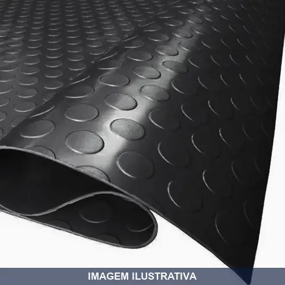
LENCOL BORRACHA PISO MOEDA MAIOR ORION
Lençol de borracha Orion fabricado com polímero de borracha natural. Oferece resistência a abrasão, impactos, cortes e pressão, com flexibilidade e isolamento elétrico. Suporta temperatura de -40°C a 70°C. Superfície antiderrapante para pisos e bancadas. Impermeável e lavável, facilita limpeza e higienização.
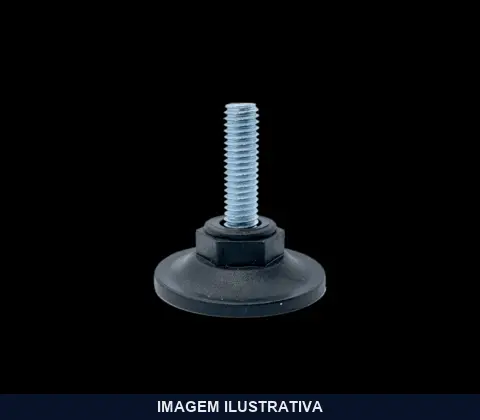
PE NIVELADOR NYLON .0UNC CENTERROL
Pé nivelador em nylon para máquinas e equipamentos. Rosca UNC padrão. Utilizado em maquinário industrial, bancadas e equipamentos que necessitam ajuste de altura e nivelamento. Material resistente e durável para aplicações em ambientes diversos.
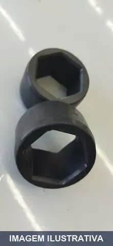
PROTETOR PARA BREAKAWAY EM BORRACHA LUBEFER
Indicação de Uso: Proteção para breakaway em sistemas hidráulicos e pneumáticos. Material e Resistência: Fabricado em borracha, oferece resistência ao desgaste e absorção de impactos. Vantagem Prática: Protege o acoplamento contra danos mecânicos durante operação e manuseio.
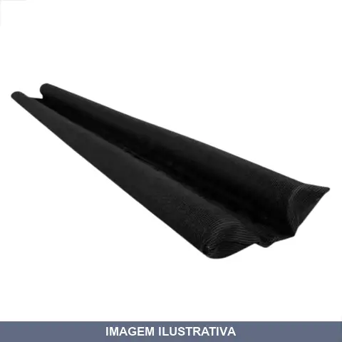
PROTETOR VEDA PORTA PRETO
Indicação de Uso: Protetor para vedação de portas, impedindo entrada de poeira, insetos e correntes de ar. Material e Resistência: Confeccionado em Policloreto de Vinila (PVC) com esponja de poliuretano. Características impermeáveis que protegem contra umidade e uso contínuo em ambientes residenciais. Vantagem Prática: Bloqueia a passagem de elementos indesejados sob a porta, mantendo ambientes mais limpos e protegidos.
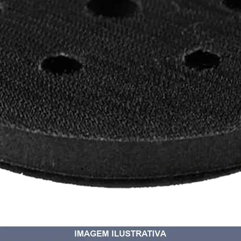
REDUTOR DE IMPACTO 18932 MAZA
Indicação de Uso: Redutor de impacto indicado para uso como pad de apoio em lixadeiras, absorvendo vibrações e reduzindo o impacto durante o lixamento. Material e Resistência: Construído em espuma e tecido resistentes para suportar uso repetitivo. Vantagem Prática: Protege a ferramenta e o operador, reduzindo esforço e fadiga durante o trabalho.
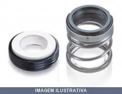
SELO MECANICO T. INPACOM
Indicação de Uso: Selagem mecânica em bombas centrífugas, bombas hidráulicas e reatores onde o eixo rotativo atravessa a câmara de selagem. / Material e Resistência: Construção cilíndrica de alta tecnologia, resistente a fluidos, líquidos e gases sob pressão. / Vantagem Prática: Elimina e previne vazamentos na caixa de selagem, garantindo vedação eficiente em equipamentos rotativos.
SELO MECANICO VITON WORKER
Selo mecânico em Viton para sistemas de bombeamento e circulação de fluidos. Indicado para aplicações hidráulicas e em equipamentos que exigem vedação dinâmica. Material resistente a temperaturas e produtos químicos. Vantagem prática: reduz vazamentos e aumenta a vida útil do equipamento.
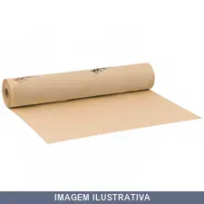
VELUMOIDE AMARELO (PAPELAO PARA JUNTA) AVS
VELUMOIDE AMARELO 0,4 X 1000MM Este material de papel é confeccionado com fibras de celulose para uso como juntas de vedação. Em suas especificações de confecção, ele recebe impregnação com um ligante de proteína, glicerina e resina sintética, possuindo propriedades excepcionalmente boas de vedação. É altamente adaptável para compensar distorções em flanges e é uma solução econômica para muitas aplicações de vedação. É quimicamente inerte na presença vapor, óleos lubrificantes de petróleo, óleos